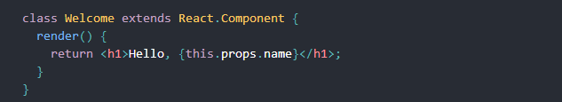
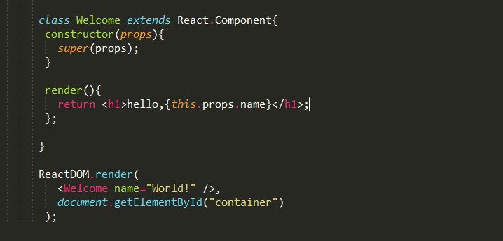
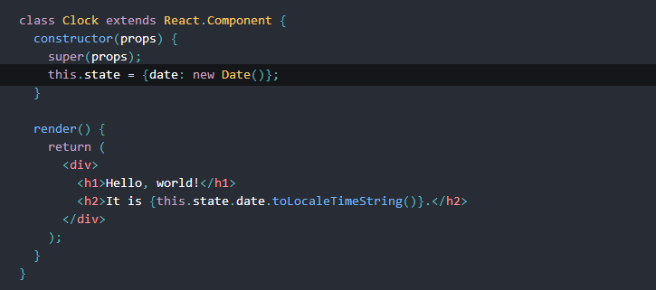
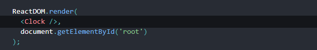
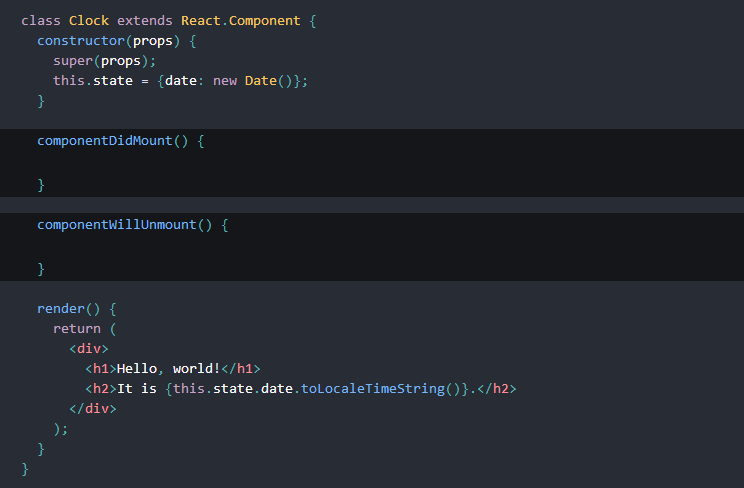
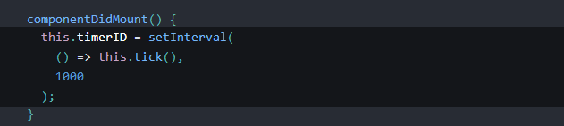
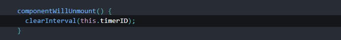
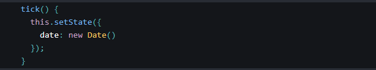

- 发表于2017-11-3
- 分类于工具
昨天笔者分享了我篇我初学react的博客。今天我接着来分享react组件、props、state和生命周期。
组件从概念上就像是函数，他可以接受任意的输入值（称之为“props”），并返回一个需要在页面上展示的React元素。
我们可以用ES6 class来定义一个组件：

当react遇到的元素是用户自定义的组件，他会将jsx属性作为单个对象传递给组件，这个对象称之为“props”。
例如,这段代码会在页面上渲染出“hello World！”：

到目前为止，我们只学过通过ReactDOM.render();方式来改变输出，接下来我们学习通过state来改变输出。
我们创建一个每秒更新时间的demo来学习state。先添加一个类构造函数来初始化状态state

ReactDOM.render()效果为：

接下来将生命周期方法添加到类中。在具有许多组件的应用程序中，在销毁时释放组件所占用的资源非常重要。每当Clock组件第一次加载到DOM中的时候，我们都想生成定时器，这在React中被称为挂载同样，每当Clock生成的这个DOM被移除的时候，我们也会想要清除定时器，这在React中被称为卸载。我们可以在组件类上声明特殊的方法，当组件挂载或卸载时，来运行一些代码:

这些方法被称作生命周期钩子。当组件输出到 DOM 后会执行 componentDidMount() 钩子，这是一个建立定时器的好地方：

我们将在componentWillUnmount（）中卸载定时器。

最后，我们实现了每秒执行的tick（）方法，他将使用this.setState来更新组件局部状态：

现在时钟每秒钟都会执行了。